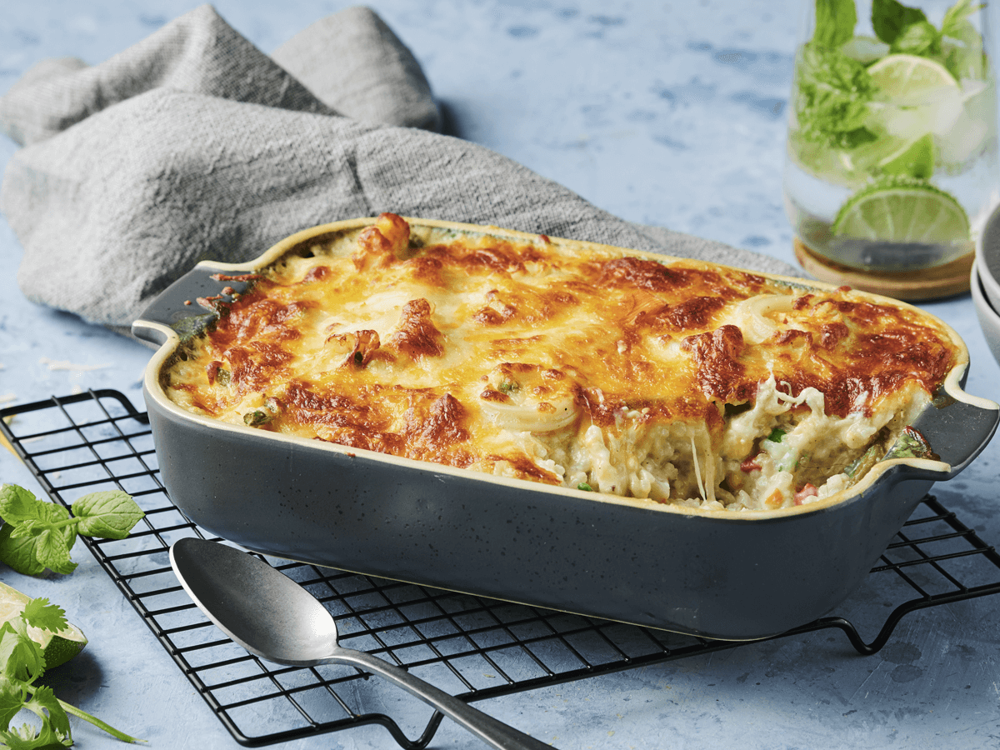

Cheese Baked Rice

Description
This baked cheesy rice is ridiculously easy and so delicious. It's a crowd pleaser that goes with almost any main dish and is a neutral staple in my recipe box! Cheesy, easy and fabulous!
Otherwise known as, the side to go with everything!
I get it. This looks like a verrrrrry boring baking dish filled with rice.
But I promise it is not that. Well, okay. It is that.
But minus the boring! This is not plain old rice. Though there is nothing wrong with that. I have always loved plain old rice!
Ingredients
- 1 1/2 tbsp Oil or margarine
- 9 nos Fresh button mushroom, sliced
- 10 pcs Baby tomato, cut into 2
- 60 g Vegetarian ham, cubed
- 3 bowls / 360 g Cooked rice
- 4 1/2 tbsp Grated mozzarella cheese
Ingredients A:
- 1 1/2 tbsp Chopped parsley
- 3 tbsp Grated mozzarella cheese
- 1 1/2 tbsp / 12 g Seri-Aji® Tom Yam Seasoning
Steps
- Heat up oil or margarine, pan-fry ham and button mushroom until fragrant. Keep aside.
- In a bowl, add in rice, fried ham, button mushroom, and ingredients (A), mix well.
- Put rice into an ovenproof-baking dish, add in tomato and sprinkle 3 tbsp grated mozzarella cheese on top.
- Bake in a preheated oven at 200°C for 10 minutes or until golden brown. Serve hot.
- The method measurement is only for 2 servings